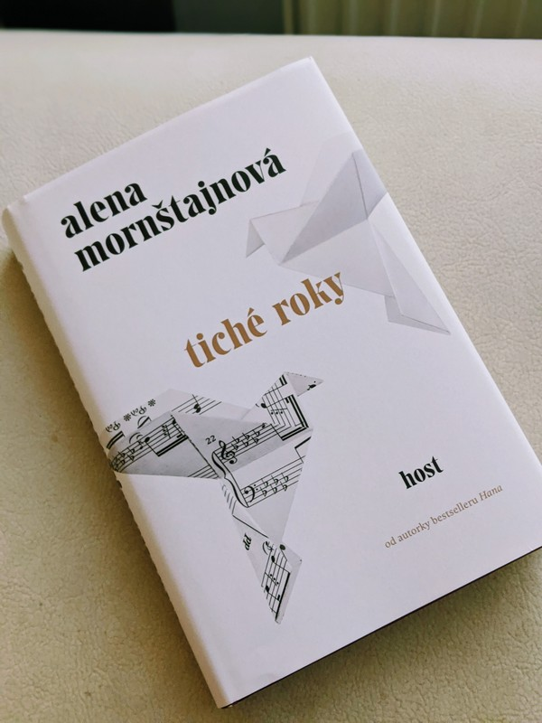

Uff… tak na tento román jsem se opravdu těšila, byť musím přiznat, že tak těžké sousto jsem nečekala. Po naprosto famózní Haně byla laťka nastavená vysoko, nicméně Tiché roky mě jen utvrdily v přesvědčení, že Aleně Mornštajnové patří místo na výsluní současných českých autorů zcela právem.
Román Tiché roky v sobě nenese tak silné historické téma jako Hana- naopak se jedná o intimní rodinné drama, vyprávěné na přeskáčku dvěma hlavními postavami, do sebe uzavřenou Bohdanou a jejím nepřístupným otcem, přesvědčeným komunistou Svatoplukem. Postupně čtenář rozkrývá tragické tajemství jejich rodinné minulosti. Zhruba od poloviny knihy, kdy se odehraje rozhodující dějový zvrat, se román stává prakticky neodložitelným, příběh vás pohltí a pak už nemůžete jinak, než s očima dokořán sledovat, zda se vztahy v rodině Žákových vyvinou nějakým příznivějším směrem nebo zůstanou stejně bezútěšné jako doposud.
Právě ta tíha a bezvýchodnost neuspokojivých rodinný vztahů mě po celou dobu dost deprimovala. Od této knihy rozhodně neočekávejte oddechovou četbu, u které by mohla hlava “vypnout”. Při čtení mě zpočátku rušilo, že na mě příběh nepůsobil dostatečně věrohodně (trochu v rozporu s tímto tvrzením: trvalo mi opravdu dlouho, než mi došlo, že hlavní hrdinka skutečně nemluví), ale od poloviny knihy už mi to vlastně nepřišlo nijak podstatné. Tiché roky byly strhující až do poslední stránky. Přesto musím říct, že z konce jsem byla malinko rozpačitá, že byl na mne možná až příliš otevřený a některé věci by si asi zasloužily dovyprávět. Výsledný dojem z knihy mi to ale každopádně nepokazilo.

Suma sumárum - po tak mimořádném literárním počinu, jakým byla Hana, musí zákonitě každý další román Aleny Mornštajnové vyvolat dojem, že to “není úplně ono”, jakkoli je výborný. Bravurní je jednoznačně propracované vykreslení jednotlivých postav, kdy žádná z nich nepůsobí černobíle, stejně jako zdůraznění síly a důležitosti mezilidské komunikace. Tiché roky rozhodně stojí za přečtení! Ale přesto se přiznám, že mně osobně bude (hlavně kvůli té celkové pochmurné atmosféře) stačit přečtení jen jedno…